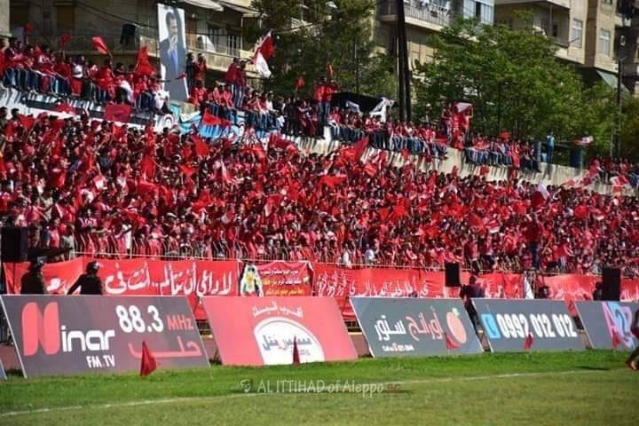
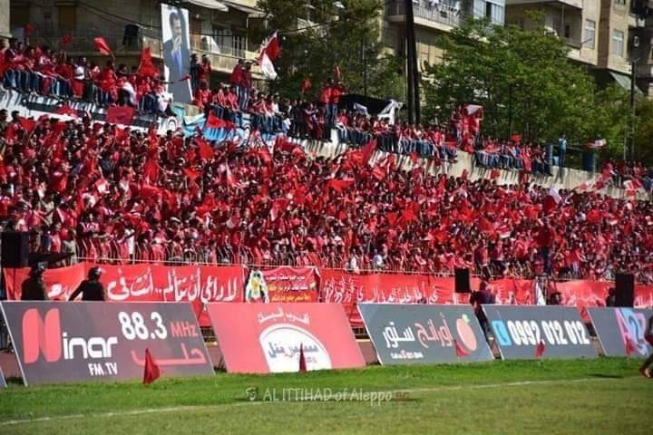
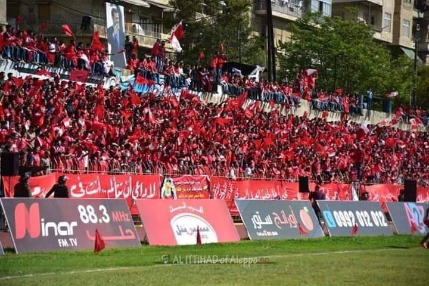
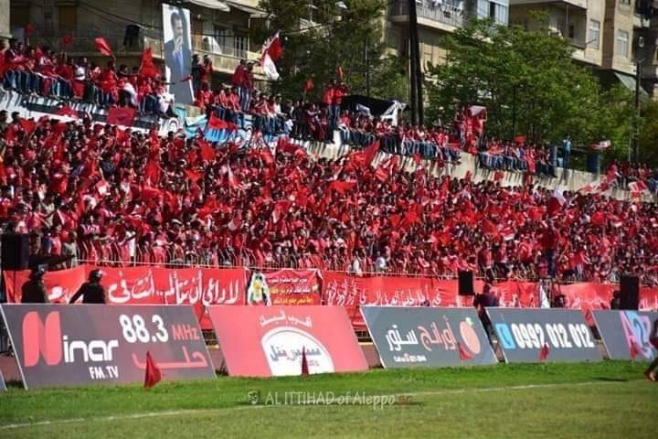

Al-Ittihad Al-Halabi Spor Kulübü, Suriye'nin Halep şehrinde oynayan profesyonel bir çok spor kulübüdür. 20 ocak 1949 yılında oluşturuldu Suriye'deki en yüksek futbol ligidir.futbolculuk kariyerini sakatlandığında sona eren ve tecrübelerinden yararlanarak eğitim veren bu takımın koç'u ise maen al raşed'tir. Takım Suriye futbol tarihinin en iyi takımlarından biri.Suriye Ligi'nde altı şampiyonluk kazandı.Cumhuriyet Kupası'ndan dokuz şampiyonluk kazandı.2010'da Asya'da kulübümüz AFC Kupası'nı kazanmayı başardı.Resmi ehliyetini 25 Ocak 1953'te aldı.Kulüp iç saha maçlarını 2008 yılında açılan 75.000 seyirci kapasiteli Halep Uluslararası Stadı'nda oynamaktadır. Şu anda Suriye'deki çatışmaların başladıktan sonra 10.000 seyirci kapasiteli Al Ittihad Stadyumu'nda oynuyor. En önemlileri basketbol olmak üzere yaklaşık 20 kulüp sporu da oynanmaktadır.huriye takımında oynadıktan sonra bu takımda yer almayı çok isterdim fakat savaş nedeniyle katılamadım